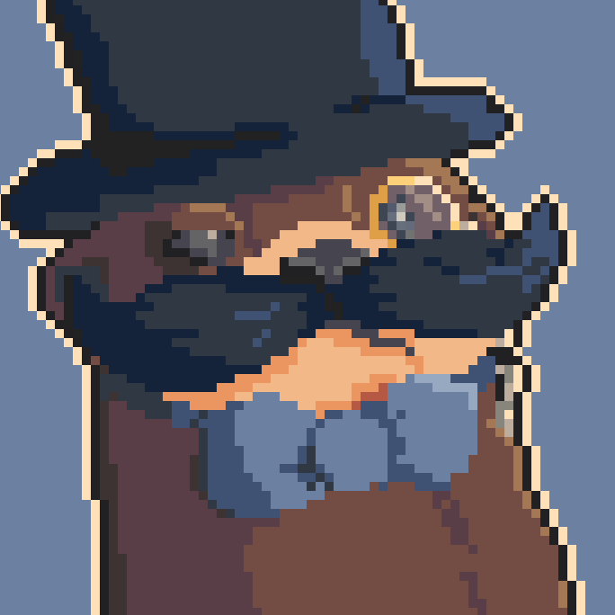

Bão?

Quem é você?

Quem sou eu?
Me chamo Gustavo e quando pequeno, queria ser médico, mas isso logo passou quando descobri o mundo da programação. Lá para os meus 8 anos, graças a influência de canais que assistia, comecei a buscar maneiras de fazer jogos e acabei chegando no RPG Maker. Passei por uma longa jornada de aplicativos e engines: gamemaker, construct, unity e etc. Em suma, fiquei boa parte da minha infância jogando minecraft, fazendo jogos, vendo vídeos e desenhos relacionados a enigmas(Gravity Falls) O_o
Quais são seus hobbies?
Qual o meu hobbie?
Tenho diversos hobbies, como jogar minecraft e programar '-'
Além desses, eu gosto de assitir alguns vídeos voltado para área de programação e pixel art, as vezes gosto de fazer desenhos em pixel art, por mais estranhos que fiquem
Catapimbas! O que você gosta de comer?
Qual a minha comida preferida?
Pizza.

´_´ Quais jogos você mais gosta?
Quais jogos você mais gosta?
Além do minecraft, não tenho jogos preferidos, mas apesar de não jogar tanto outros jogos, gosto bastante do genêro de investigação, puzzle, terror, jogos em pixel art, jogos indies em geral, shooters e o 5M.

É, realmente são jogos bons. Você tem algum animal de estimação?
Animais de estimação?
Na verdade, tenho sim. Eu tenho 3 passáros e um deles até joga minecraft comigo.